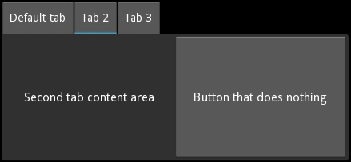

{kind=link}
Table Of Contents
TabbedPanel¶
バージョン 1.3.0 で追加.
The TabbedPanel widget manages different widgets in tabs, with a header area for the actual tab buttons and a content area for showing the current tab content.
The TabbedPanel provides one default tab.
Simple example¶
'''
TabbedPanel
============
Test of the widget TabbedPanel.
'''
from kivy.app import App
from kivy.uix.tabbedpanel import TabbedPanel
from kivy.lang import Builder
Builder.load_string("""
<Test>:
size_hint: .5, .5
pos_hint: {'center_x': .5, 'center_y': .5}
do_default_tab: False
TabbedPanelItem:
text: 'first tab'
Label:
text: 'First tab content area'
TabbedPanelItem:
text: 'tab2'
BoxLayout:
Label:
text: 'Second tab content area'
Button:
text: 'Button that does nothing'
TabbedPanelItem:
text: 'tab3'
RstDocument:
text:
'\\n'.join(("Hello world", "-----------",
"You are in the third tab."))
""")
class Test(TabbedPanel):
pass
class TabbedPanelApp(App):
def build(self):
return Test()
if __name__ == '__main__':
TabbedPanelApp().run()
注釈
A new class TabbedPanelItem has been introduced in 1.5.0 for
convenience. So now one can simply add a TabbedPanelItem to a
TabbedPanel and content to the TabbedPanelItem
as in the example provided above.
Customize the Tabbed Panel¶
You can choose the position in which the tabs are displayed:
tab_pos = 'top_mid'
An individual tab is called a TabbedPanelHeader. It is a special button containing a content property. You add the TabbedPanelHeader first, and set its content property separately:
tp = TabbedPanel()
th = TabbedPanelHeader(text='Tab2')
tp.add_widget(th)
An individual tab, represented by a TabbedPanelHeader, needs its content set. This content can be any widget. It could be a layout with a deep hierarchy of widgets, or it could be an individual widget, such as a label or a button:
th.content = your_content_instance
There is one “shared” main content area active at any given time, for all the tabs. Your app is responsible for adding the content of individual tabs and for managing them, but it’s not responsible for content switching. The tabbed panel handles switching of the main content object as per user action.
There is a default tab added when the tabbed panel is instantiated. Tabs that you add individually as above, are added in addition to the default tab. Thus, depending on your needs and design, you will want to customize the default tab:
tp.default_tab_text = 'Something Specific To Your Use'
The default tab machinery requires special consideration and management. Accordingly, an on_default_tab event is provided for associating a callback:
tp.bind(default_tab = my_default_tab_callback)
It’s important to note that by default, default_tab_cls is of type
TabbedPanelHeader and thus has the same properties as other tabs.
Since 1.5.0, it is now possible to disable the creation of the
default_tab by setting do_default_tab to False.
Tabs and content can be removed in several ways:
tp.remove_widget(widget/tabbed_panel_header)
or
tp.clear_widgets() # to clear all the widgets in the content area
or
tp.clear_tabs() # to remove the TabbedPanelHeaders
To access the children of the tabbed panel, use content.children:
tp.content.children
To access the list of tabs:
tp.tab_list
To change the appearance of the main tabbed panel content:
background_color = (1, 0, 0, .5) #50% translucent red
border = [0, 0, 0, 0]
background_image = 'path/to/background/image'
To change the background of a individual tab, use these two properties:
tab_header_instance.background_normal = 'path/to/tab_head/img'
tab_header_instance.background_down = 'path/to/tab_head/img_pressed'
A TabbedPanelStrip contains the individual tab headers. To change the appearance of this tab strip, override the canvas of TabbedPanelStrip. For example, in the kv language:
<TabbedPanelStrip>
canvas:
Color:
rgba: (0, 1, 0, 1) # green
Rectangle:
size: self.size
pos: self.pos
By default the tabbed panel strip takes its background image and color from the tabbed panel’s background_image and background_color.
-
class
kivy.uix.tabbedpanel.StripLayout(**kwargs)[ソース]¶ ベースクラス:
kivy.uix.gridlayout.GridLayoutThe main layout that is used to house the entire tabbedpanel strip including the blank areas in case the tabs don’t cover the entire width/height.
バージョン 1.8.0 で追加.
-
background_image¶ Background image to be used for the Strip layout of the TabbedPanel.
background_imageis aStringPropertyand defaults to a transparent image.
-
border¶ Border property for the
background_image.borderis aListPropertyand defaults to [4, 4, 4, 4]
-
-
class
kivy.uix.tabbedpanel.TabbedPanel(**kwargs)[ソース]¶ ベースクラス:
kivy.uix.gridlayout.GridLayoutThe TabbedPanel class. See module documentation for more information.
-
background_color¶ Background color, in the format (r, g, b, a).
background_coloris aListPropertyand defaults to [1, 1, 1, 1].
-
background_disabled_image¶ Background image of the main shared content object when disabled.
バージョン 1.8.0 で追加.
background_disabled_imageis aStringPropertyand defaults to ‘atlas://data/images/defaulttheme/tab’.
-
background_image¶ Background image of the main shared content object.
background_imageis aStringPropertyand defaults to ‘atlas://data/images/defaulttheme/tab’.
-
border¶ Border used for
BorderImagegraphics instruction, used itself forbackground_image. Can be changed for a custom background.It must be a list of four values: (bottom, right, top, left). Read the BorderImage instructions for more information.
borderis aListPropertyand defaults to (16, 16, 16, 16)
-
content¶ This is the object holding (current_tab’s content is added to this) the content of the current tab. To Listen to the changes in the content of the current tab, you should bind to current_tabs content property.
contentis anObjectPropertyand defaults to ‘None’.
-
current_tab¶ Links to the currently selected or active tab.
バージョン 1.4.0 で追加.
current_tabis anAliasProperty, read-only.
-
default_tab¶ Holds the default tab.
注釈
For convenience, the automatically provided default tab is deleted when you change default_tab to something else. As of 1.5.0, this behaviour has been extended to every default_tab for consistency and not just the automatically provided one.
default_tabis anAliasProperty.
-
default_tab_cls¶ Specifies the class to use for the styling of the default tab.
バージョン 1.4.0 で追加.
警告
default_tab_cls should be subclassed from TabbedPanelHeader
default_tab_clsis anObjectPropertyand defaults to TabbedPanelHeader. If you set a string, theFactorywill be used to resolve the class.バージョン 1.8.0 で変更: The
Factorywill resolve the class if a string is set.
-
default_tab_content¶ Holds the default tab content.
default_tab_contentis anAliasProperty.
-
default_tab_text¶ Specifies the text displayed on the default tab header.
default_tab_textis aStringPropertyand defaults to ‘default tab’.
-
do_default_tab¶ Specifies whether a default_tab head is provided.
バージョン 1.5.0 で追加.
do_default_tabis aBooleanPropertyand defaults to ‘True’.
-
strip_border¶ Border to be used on
strip_image.バージョン 1.8.0 で追加.
strip_borderis aListPropertyand defaults to [4, 4, 4, 4].
-
strip_image¶ Background image of the tabbed strip.
バージョン 1.8.0 で追加.
strip_imageis aStringPropertyand defaults to a empty image.
-
switch_to(header, do_scroll=False)[ソース]¶ Switch to a specific panel header.
バージョン 1.10.0 で変更.
If used with do_scroll=True, it scrolls to the header’s tab too.
-
tab_height¶ Specifies the height of the tab header.
tab_heightis aNumericPropertyand defaults to 40.
-
tab_list¶ List of all the tab headers.
tab_listis anAliasPropertyand is read-only.
-
tab_pos¶ Specifies the position of the tabs relative to the content. Can be one of: left_top, left_mid, left_bottom, top_left, top_mid, top_right, right_top, right_mid, right_bottom, bottom_left, bottom_mid, bottom_right.
tab_posis anOptionPropertyand defaults to ‘top_left’.
-
tab_width¶ Specifies the width of the tab header.
tab_widthis aNumericPropertyand defaults to 100.
-
-
class
kivy.uix.tabbedpanel.TabbedPanelContent(**kwargs)[ソース]¶ ベースクラス:
kivy.uix.floatlayout.FloatLayoutThe TabbedPanelContent class.
-
class
kivy.uix.tabbedpanel.TabbedPanelHeader(**kwargs)[ソース]¶ ベースクラス:
kivy.uix.togglebutton.ToggleButtonA Base for implementing a Tabbed Panel Head. A button intended to be used as a Heading/Tab for a TabbedPanel widget.
You can use this TabbedPanelHeader widget to add a new tab to a TabbedPanel.
-
content¶ Content to be loaded when this tab header is selected.
contentis anObjectPropertyand defaults to None.
-
-
class
kivy.uix.tabbedpanel.TabbedPanelItem(**kwargs)[ソース]¶ ベースクラス:
kivy.uix.tabbedpanel.TabbedPanelHeaderThis is a convenience class that provides a header of type TabbedPanelHeader and links it with the content automatically. Thus facilitating you to simply do the following in kv language:
<TabbedPanel>: # ...other settings TabbedPanelItem: BoxLayout: Label: text: 'Second tab content area' Button: text: 'Button that does nothing'
バージョン 1.5.0 で追加.
-
class
kivy.uix.tabbedpanel.TabbedPanelStrip(**kwargs)[ソース]¶ ベースクラス:
kivy.uix.gridlayout.GridLayoutA strip intended to be used as background for Heading/Tab. This does not cover the blank areas in case the tabs don’t cover the entire width/height of the TabbedPanel(use
StripLayoutfor that).-
tabbed_panel¶ Link to the panel that the tab strip is a part of.
tabbed_panelis anObjectPropertyand defaults to None .
-